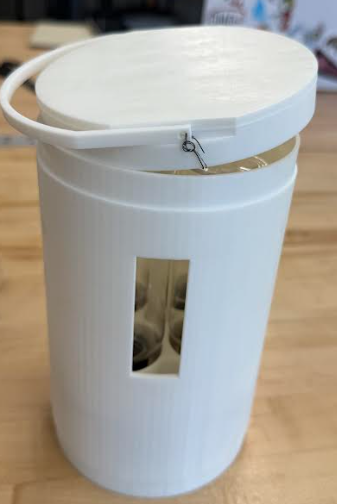

My Projects
Environmental Research Internship at Howard University Beltsville Campus
During my internship at the Howard University Beltsville Campus, I was part of a research team focused on studying the flow of particulate matter in Bolivia. This environmental research project allowed me to apply my engineering background to real-world sustainability issues. I participated in data collection, analysis, and environmental monitoring, providing me with a comprehensive understanding of the challenges involved in creating sustainable engineering solutions for global environmental issues.
This internship gave me invaluable insights into the role of mechanical engineering in addressing environmental problems, particularly the design of systems that help monitor and mitigate air pollution. It deepened my appreciation for the intersection of technology, sustainability, and global impact, shaping my future aspirations as an engineer committed to creating solutions that prioritize environmental well-being.
TidyTwist: Portable Liquid Dispenser
TidyTwist is a TSA-approved portable liquid dispenser designed to address the common challenges travelers face when transporting toiletries such as shampoo, conditioner, and body wash. The goal was to create a compact, user-friendly, and durable dispenser that complies with TSA regulations while ensuring ease of use during travel.
The dispenser features a rotating mechanism that allows users to easily access the desired amount of liquid, ensuring efficient dispensing with minimal mess. The rotating mechanism was carefully designed with ergonomics in mind, making it intuitive to use and reducing liquid wastage. A key challenge was designing the dispenser to accommodate standard liquid sizes while maintaining a compact form that would easily fit within carry-on luggage restrictions.
Throughout the design process, I prioritized material durability, leak-proof seals, and ease of cleaning. TidyTwist is made from lightweight, BPA-free plastic, ensuring both portability and safety. Additionally, I focused on creating a design that could withstand the pressure and movements typical of travel, ensuring the dispenser remains functional throughout its use.
During development, I tested several iterations to refine the mechanism's functionality and confirm the scalability of manufacturing. One of the main challenges was preventing leaks, which I addressed by incorporating a silicone gasket around the dispensing nozzle. This solution ensures that the dispenser remains secure and operational, even during rough handling in transit.
This project strengthened my skills in product design, material selection, and testing. It also reinforced my understanding of user-centered design principles, emphasizing the importance of creating practical, efficient solutions that cater to real-world needs.
Orange Crusher (CAD Design)
I created a CAD model for an orange crusher that is designed to help users easily crush oranges with minimal effort. This project was a great exercise in learning how to design functional mechanical systems and refine engineering solutions.

Toy Car Design
In my freshman year of college, I worked with a group to design and build a small toy car from scratch. This project taught me the importance of teamwork, prototyping, and testing, as well as refining mechanical designs to meet specific goals.

VEX Robotics - State Competition
As part of a team, I built a robot from scratch for the VEX Robotics competition in high school. Our robot successfully reached the state competition, demonstrating our skills in mechanical design and programming.